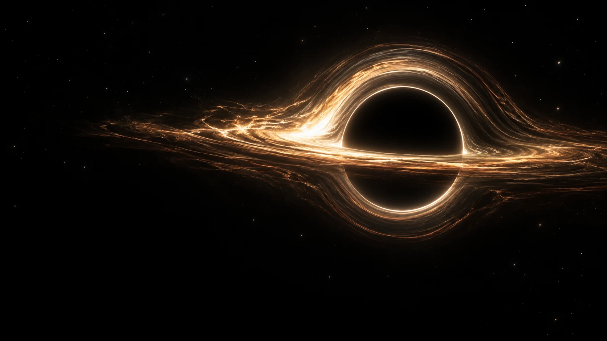

创作工具
{{name:frameweave}} {{english:frameweave}}
把生成任务放进同一张画布。
{{description:frameweave}}

自动适合大多数设备 · 极致画质负荷较高
CURIOSITY, MADE REAL.
独立开发 · 视觉创作 · 互动探索
01 / SELECTED TRANSMISSIONS
把生成任务放进同一张画布。
{{description:yingxu}}
{{description:michelle-pet}}
02 / SOFTWARE COLLECTION
为创作、效率，和日常的微小乐趣。
换个关键词，或浏览全部软件。
03 / BEYOND SOFTWARE
有些想法适合被看见，
有些世界适合走进去。
光线、情绪，与值得留下的片刻。
尚未公开作品为好奇心，留一扇可以推开的门。
尚未公开作品04 / FIELD NOTES
每一次微小的更新，
都是继续探索的痕迹。
THE PERSON BEHIND THE PROJECTS